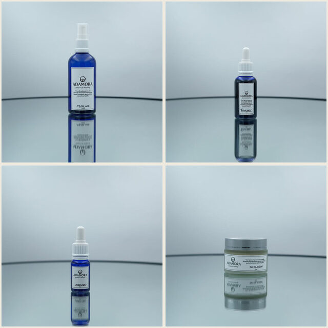
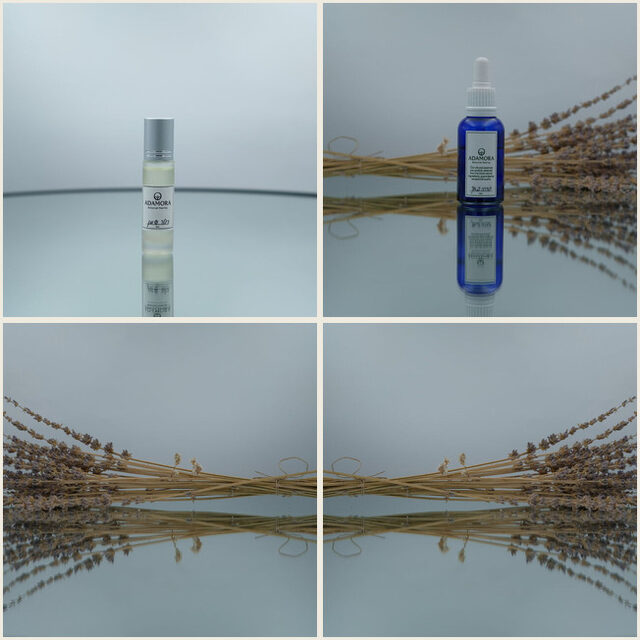
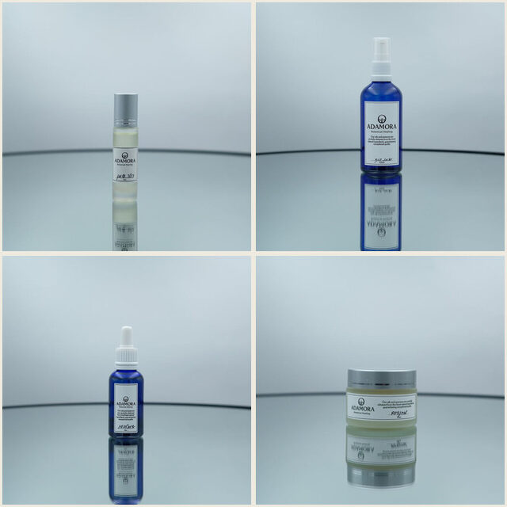
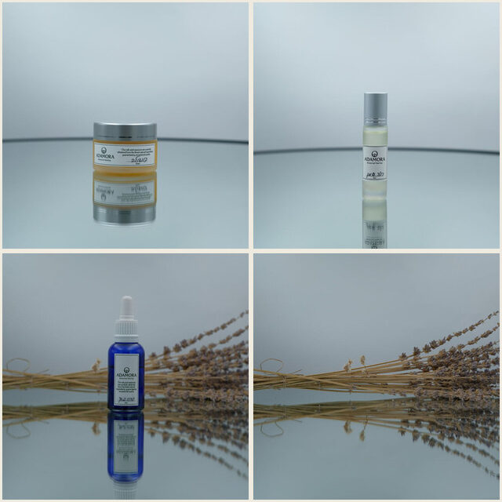
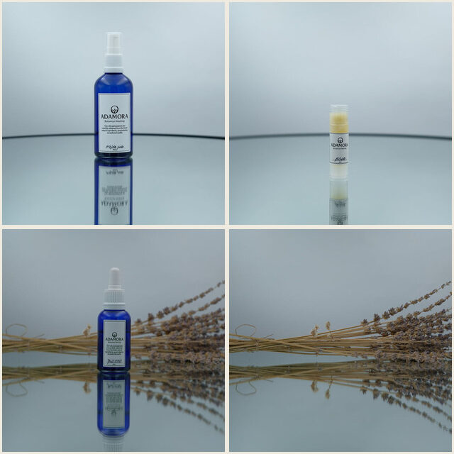
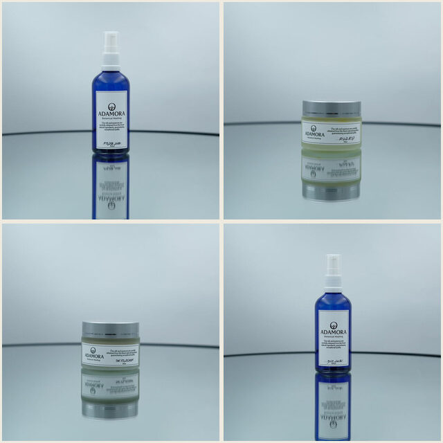

שמן לניקוי והזנת הפנים
שמן שקדים בכבישה קרה, עשיר ברכיבים המספקים הזנה ולחות. מתאים גם להורדת איפור.
משחות, שמנים, קרמים ומארזים שאני רוקחת בעבודת יד.
מכיוון שכל המוצרים נרקחים מחומרים טבעיים, צמחי מרפא ושמנים אתריים פעילים, חשוב לי לוודא שמה שאת בוחרת מתאים בדיוק לעור שלך, למצבך (היריון, רגישויות) ולצרכים שלך. הרכישה מתבצעת בשיחה אישית בוואטסאפ – שלחי לי הודעה עם המוצר או המארז שאהבת, ונתאים אותו עבורך.

25 מוצרים, בשלוש קבוצות: לפנים ולעור · לגוף ולנפש · למבער. למטה — שלוש ערכות טיפוליות וארבעה מארזי מתנה.
להזמנה או לשאלה — בוואטסאפ. לפני ההזמנה כדאי לקרוא את ״חשוב לדעת״.
שמן שקדים בכבישה קרה, עשיר ברכיבים המספקים הזנה ולחות. מתאים גם להורדת איפור.

קרם פנים ארומתרפי עשיר בשמנים ייחודיים ומזינים, בעל פעילות אנטי־אייג׳ינג.

מסכת חימר טיפולית ומזינה מבוססת חימר ירוק. מומלצת לטיפול באקנה.

מי פנים טבעיים לחיטוי ואיזון – להרגעת מצבי עור שונים, ביניהם אקנה.

משחת עזרה ראשונה טבעית, חובה בכל בית (נקראת גם ״משחת הקסם״). עדינה ומתאימה לתינוקות ולעור רגיש.

שפתון לחות והזנה מבוסס שמנים וחמאות מחומרי גלם טבעיים, בניחוח לבנדר ותפוז.

קרם ידיים ארומתרפי עשיר בשמנים ייחודיים, בעל פעילות משקמת ומזינה את העור.

דאודורנט טבעי מבוסס מגנזיום, חמאות ושמנים טבעיים, בניחוח נעים ועדין. מתאים לנשים ולגברים.

שמן גוף מעניק לחות והזנה לעור, מתאים לשימוש בסוף המקלחת.
מלח ים אטלנטי ופרחי לבנדר יבשים – להרגעה בסוף היום, באמבט או באמבט רגליים.

קרם עשיר במינרל מגנזיום ושמנים אתריים – להתכווצויות שרירים, כאבי מחזור וקשיי הירדמות.

משחה מבוססת ג׳ל אלוורה שנספג בקלות – מצוינת להתכווצויות ולכאבי שרירים.

שמן נוגד עוויתות למערכת העיכול – לכאבי בטן, גזים, מעי רגיש, כאבי מחזור ותסמונת קדם־וסתית.

שמן מפנק לעיסוי, מבוסס שמנים אתריים בעלי ניחוח משכר – פלפל שחור, ורד, ילנג ילנג, וניל, פטשולי ועוד.
תערובת שמנים ייחודיים שמתאימה לתינוקות מגיל לידה, על בסיס שמן שקדים בכבישה קרה.

תערובת שמנים ארומתרפיים לחיזוק השיער והשורשים – לנשירה, חולשת שיער וקשקשים.
מכיל רוזמרין – לא מתאים לילדים.

תמציות צמחים הומיאופתיות מאנגליה לטיפולי גוף־נפש. שתי תמציות מוכנות: ״טיפת שלווה״ למתח ושינה, ״נוכחות״ לריכוז.

תערובות שמנים אתריים טהורים על בסיס שמן חוחובה אורגני – למריחה על נקודות הדופק, לשינוי תדר ולתמיכה יומיומית.
כולל: אדמה · פנימה · אור · לב · הרמוניה
תחליף טבעי לבושם, קל לנשיאה בתיק.
בקבוקון מלח הרחה עם שמנים אתריים, מותאם אישית – להרגעה, חרדה, ריכוז והרמת אנרגיה.
עץ קדוש לטיהור המרחב מאנרגיות עומדות והשריית אווירה נינוחה.

מבער שמנים מקרמיקה, מגיע בדגמים וצבעים משתנים לבחירה.

תערובת שמנים אתריים טהורים למבער – ללמידה, עבודה, עייפות, מצב רוח ירוד, חולי והצטננות ולטיהור חלל החדר.
שמן אתרי לא מדולל: לא על הגוף, לא בבליעה, לא בקרבת תינוקות מתחת לגיל שנה.

תערובת שמנים אתריים טהורים למבער – לטיפול, מדיטציה, יוגה, הרפיה וכניסה לשינה רגועה.
שמן אתרי לא מדולל: לא על הגוף, לא בבליעה, לא בקרבת תינוקות מתחת לגיל שנה.

בקבוקון שמן אתרי טהור למבער, לבחירה מבין ארבעה – לבנדר, תפוז מתוק, ארז אטלס, גרניום.
שמן אתרי לא מדולל: לא על הגוף, לא בבליעה, לא בקרבת תינוקות מתחת לגיל שנה.
כותבות לי בוואטסאפ איזה מוצר או ערכה מעניינים אתכן. אני מתאימה, רוקחת אם צריך, ושולחות או אוספות מהקליניקה — כפי שנוח לכן.
חלק מהמוצרים — קרם פנים, קרם ידיים, מלח הרחה ופרחי באך — נרקחים לפי מה שאתן צריכות, אחרי שיחה טלפונית קצרה. פרחי באך דורשים חידוש והתאמה בכל שלושה–ארבעה שבועות.
רוב המוצרים מתאימים לכולם. לילדים ולתינוקות — רק מוצרים שמיועדים להם במפורש (למשל משחת קלנדולה ושמן העיסוי לתינוקות), ותמיד אחרי שנדבר.
כן. משלוח ב-UPS לנקודת מסירה או עד הבית — את העלות נסגור בהודעה. אפשר גם לתאם איסוף עצמי ברמת גן או בעמק האלה.
כמה מוצרים שעובדים יחד, לנושא אחד.

כל מה שצריך לטיפוח וטיפול יומיומי בעור עם אקנה, בשגרה של בוקר וערב.
כולל: שמן שקדים לניקוי · פרחי לבנדר בחומץ תפוחים אורגני · שמן נקודתי לפצעים · קרם פנים טיפולי · מסכת חימר · טיפת שלווה (פרחי באך)

שלושה פריטים לשקט בראש ולמרחב נינוח: ריח, מגע ותמצית.
כולל: מקל פאלו סנטו · רולר ״אדמה״ · טיפת שלווה (פרחי באך)

לחיבור גוף־נפש מיטיב בכל חודש מחדש: איזון, הזנה והקלה בימי הכאב.
כולל: רולר ״הרמוניה״ · שמן גוף · שמן עיסוי בטן · קרם מגנזיום
מארז שנרקח לרגע מסוים — לכלה, להיריון וללידה, לשינה טובה, או לטקס טיפוח.

לקראת היום המרגש שלך, רקחנו עבורך מארז טבעי ומפנק במיוחד שיעטוף אותך ברוגע, באהבה ובאנרגיות טובות.
כולל: מלחי אמבט מפנקים · רולר ״לב״ · טיפת שלווה (פרחי באך) · משחת קלנדולה · שמן וניל מדגסקר · פאלו סנטו · קריסטל סיטרין · פרחים יבשים

מארז טבעי שנרקח במיוחד כדי לתמוך בך, לחזק ולהרגיע את הגוף והנפש לקראת הלידה ובימים שאחריה.
כולל: שמן שקדים טהור בכבישה קרה · שמן לתמיכה בלידה · שמן התאוששות לאחר לידה · מלח הרחה תפוז · שפתון תפוז טבעי · טיפת שלווה (פרחי באך)

טקס שינה טבעי ומפנק, שנועד להרפות את הגוף, להשקיט את המחשבות ולעטוף אותך לקראת שינה עמוקה ואיכותית.
כולל: קרם מגנזיום למריחה · מבער שמנים מקרמיקה · תערובת שמנים למבער

שגרת הטיפוח הטבעית שלך, עם רכיבים טהורים המזינים את העור, מחיים אותו ומעניקים לו זוהר טבעי מבפנים ומבחוץ.
כולל: שמן שקדים טהור · קרם פנים טבעי · מסכת חימר · שמן גוף מפנק · שפתון טבעי · רולר שמנים ״לב״
כתבי לי מה את מחפשת — להרגעה, לשינה, לעור, לריח בבית — ואני מתאימה לך.
לוואטסאפ